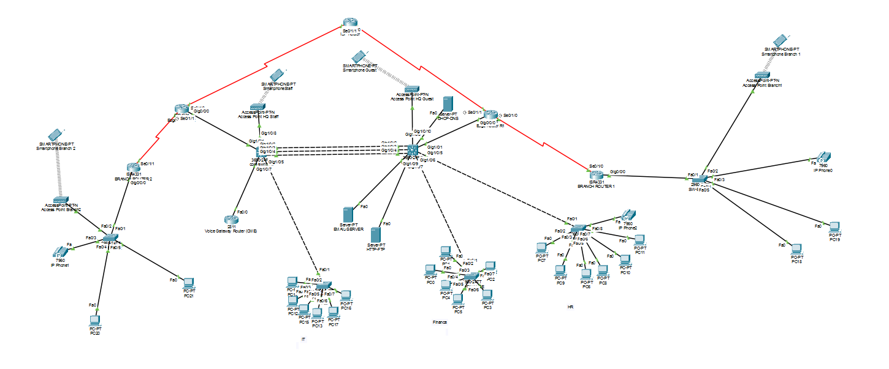

Two branch offices, redundant HQ core, wireless staff and guest segmentation, centralized services, and IP telephony — designed, configured, and verified across every layer of the stack.

01 / Overview
SecureCorp is a fictional company used as the basis for this project: a headquarters site with redundant core infrastructure, two branch offices connected over WAN, and a full set of internal services. The build covers routing, switching, security, wireless, voice, and address translation as a single cohesive design rather than isolated exercises.
02 / Requirements
03 / Verification
Every subsystem was tested against real device output before being marked complete — OSPF adjacency states, HSRP failover behavior, EtherChannel bundling, and NAT translation tables were all confirmed on the running devices.
CORE-SW1# show etherchannel summary Group Port-channel Protocol Ports 1 Po1(SU) LACP Gig1/0/2(P) Gig1/0/3(P) Gig1/0/4(P) CORE-SW1# show standby brief Interface Grp Pri P State Active Standby Vl10 10 150 P Active local 192.168.10.3 Vl30 30 100 Standby 192.168.30.3 local EDGE-R2# show ip nat translations Pro Inside global Inside local Outside global icmp 100.64.0.2:1 192.168.30.109:1 100.64.0.1:1 ← PAT confirmed live
04 / Deliverables
Built with